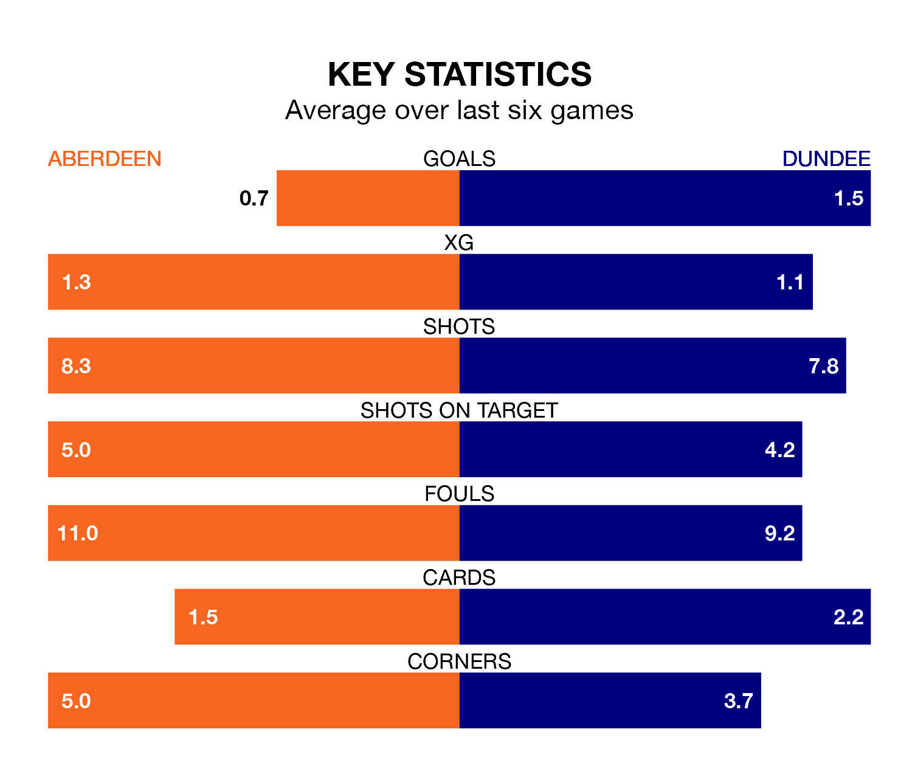

Dundee travel to Aberdeen on Saturday in the Premiership.
The visitors come into the game on the back of a defeat in their last match, having lost to Motherwell 3-2 at home, with goals from Jordan McGhee and Luke McCowan.
Aberdeen, meanwhile, drew their last match, 0-0 against Livingston.
With 35 goals in 32 games so far this season, Aberdeen are scoring at below the league average rate with 1.1 goals per game. And they are conceding more than average, letting in 49 goals at a rate of 1.5 per game.
Dundee, meanwhile, are above average scorers, with 1.4 goals per game, compared to a league average of 1.3. They have conceded 1.7 goals per game.
In the last 10 years, Aberdeen and Dundee have played each other on 23 occasions. Aberdeen won 16 of them, Dundee two, and they drew five times.
On average, Aberdeen scored 2.0 goals and the Dees 0.8 in those matches.
Their last meeting was on March 13, when Dundee won 1-0 at home.
In Bojan Miovski, the hosts have one of the league's most on-form strikers so far this season. He has notched 14 goals in 32 appearances, to sit third in the scoring charts.
His goal rate of one every 199 minutes is quicker than that of McCowan, the Dees's top scorer with a goal every 293 minutes, and a total of nine goals in 30 games.
Aberdeen are ninth in the table after 32 games, of which they have won eight and drawn 10, earning 34 points.
The away team are three places ahead of Aberdeen in sixth, with 10 wins and nine draws putting them on 39 points.
The home side are in mixed form in the Premiership, with two wins and a draw from their last six games.
And also with two wins and a draw over that period, Dundee's form is identical – they have both taken seven points from 18.
Saturday's match will be refereed by Nick Walsh, who has taken charge of 16 Premiership games so far this season, issuing two red cards and booking 80 players. He has awarded eight penalties.
The last Aberdeen game Walsh refereed was a 2-1 away loss to St. Mirren on March 2. His last Dundee match was their 1-1 draw away at Aberdeen on January 30.
Updated: 10:01 (UTC), 12/04/24